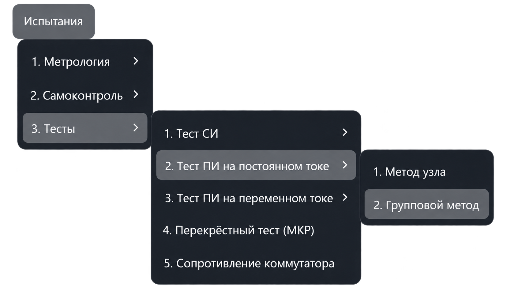
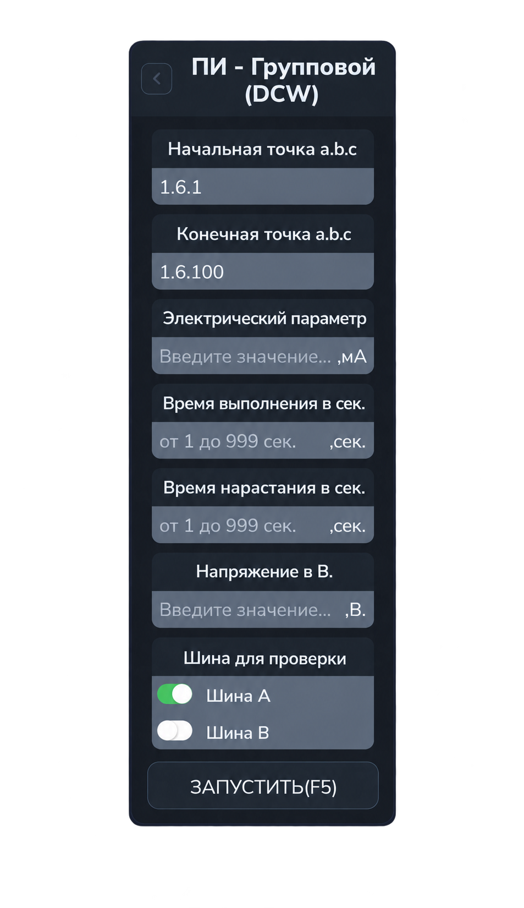
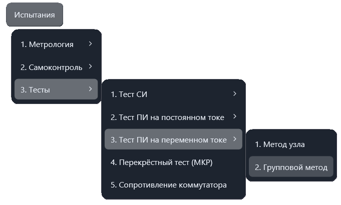
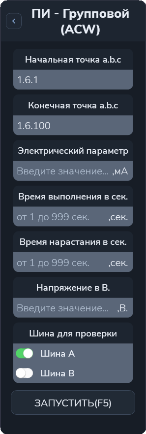

Тест ПИ групповым методом
Тест проверяет прочность изоляции заданного диапазона точек при испытательном напряжении. Установка измеряет ток утечки, который сравнивается с заданным предельным значением.
Для постоянного напряжения откройте «Испытания → Тесты → Тест ПИ на постоянном токе → Групповой метод». Команда открывает рабочую вкладку; испытание запускается отдельно.
ПИ (DCW): постоянное напряжение


Общие параметры DCW и ACW
| Поле | Что указать |
|---|---|
| Начальная точка a.b.c | Первую точку проверяемого диапазона. |
| Конечная точка a.b.c | Последнюю точку проверяемого диапазона. |
| Электрический параметр | Предельный ток утечки в миллиамперах (мА). |
| Время выполнения в сек. | Время одного испытания в секундах. |
| Время нарастания в сек. | Время нарастания до заданного испытательного напряжения в секундах. |
| Напряжение в В. | Испытательное напряжение в вольтах. |
| Шина для проверки | Активную шину А или В. Противоположная шина используется для второй стороны измерения. |
Адрес a.b.c состоит из номера шасси, номера модуля коммутации и номера точки.
Начальная и конечная точки входят в диапазон. Например, 1.6.1–1.6.100
означает точки 1–100 модуля 6 шасси 1.
Допустимые параметры проверяются с учётом возможностей настроенной установки. Время задаётся для одного испытания, а не для всего диапазона.
Порядок работы
- Выберите тест ПИ на постоянном (DCW) или переменном (ACW) токе, затем нужный метод. Задайте диапазон точек.
- Укажите предельный ток в мА, время испытания, время нарастания и напряжение.
- Выберите одну активную шину — А или В.
- Нажмите «Запустить» или F5 в активной вкладке.
- Следите за ходом испытания и результатами в протоколе. При ошибке ориентируйтесь на сообщение и запрос приложения.
Алгоритм
Приложение проверяет ввод, подключает оборудование и настраивает установку в выбранном режиме DCW или ACW: задаёт напряжение, время испытания, время нарастания и верхний предел тока утечки.
На каждом шаге точки делятся на две группы по текущему разряду двоичного представления их номеров. Точки с единицей подключаются к выбранной шине, с нулём — к противоположной. Между группами выполняется испытание, затем точки отключаются и формируется следующее разбиение.
При выборе А группа с единицей подключается к А, а другая — к В; при выборе В назначение шин меняется на противоположное.
Результаты
В протокол выводятся диапазон, номер разряда и его битовое обозначение, измеренный ток утечки в мА и результат проверки.
Успешным считается результат, при котором ток утечки строго меньше заданного предела. Равенство пределу и превышение отмечаются как ошибка.
Электрический параметр здесь задаёт ток утечки в мА. Испытательное напряжение вводится отдельно в поле «Напряжение в В.». Ввод показания эталонного вольтметра для этого теста не требуется.
ПИ (ACW): переменное напряжение
Для переменного напряжения предусмотрен отдельный пункт «Испытания → Тесты → Тест ПИ на переменном токе → Групповой метод». Команда открывает отдельную вкладку ACW; параметры из вкладки DCW не заменяют её настройку.
В режиме ACW испытательное напряжение переменное, частота устанавливается приложением автоматически — 50 Гц. Отдельного поля частоты в панели нет. Укажите предельный ток утечки в мА, время испытания, время нарастания, напряжение в В и одну активную шину. Эти поля имеют то же назначение, что и в DCW.


Выполнение ПИ (ACW)
- Заполните параметры во вкладке ACW и нажмите «Запустить» или F5 в активной вкладке.
- Приложение проверяет ввод, подготавливает коммутацию и задаёт установке режим ACW, напряжение, частоту 50 Гц, время испытания, время нарастания и предел тока.
- Для очередного разряда номеров точек формируются две группы: точки с единицей подключаются к выбранной шине, с нулём — к противоположной.
- Между группами выполняется испытание переменным напряжением. Затем точки отключаются и формируется разбиение для следующего разряда.
В протокол выводятся диапазон, номер разряда и его битовое обозначение, измеренный ток утечки в мА и оценка. Условие успешного результата такое же, как в DCW: ток строго меньше заданного предела. Равенство пределу считается ошибкой. При сообщении об ошибке следуйте запросу приложения.
Время испытания и время нарастания задаются для отдельной проверки. Общая длительность зависит от диапазона, количества переключений и повторов. Измеряется ток утечки; ввод показаний эталонного вольтметра не требуется.
Другой способ проверки описан в разделе «Тест ПИ методом узла».